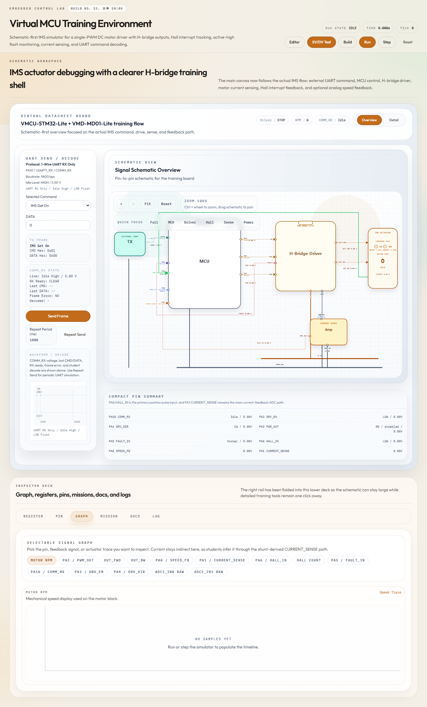

핵심 소개
자동차 임베디드 실무에서 모터 제어, 바디 제어기, 기능안전, AUTOSAR 툴링을 다뤘고, 개인 프로젝트에서는 반복 작업을 줄이는 운영 도구와 감지 시스템을 만들어왔습니다. 관심사는 멋진 말보다 분명합니다. 사람이 계속 보고 있지 않아도 되는 구조를 만들고, 판단 기준을 화면과 로그로 남기는 것입니다.
처음 보는 사람도 이해할 수 있게
복잡해 보이는 일을 차근차근 정리하고, 필요한 도구를 직접 만들어온 기록입니다. 실무 이력은 짧게 두고, 개인 프로젝트는 어떤 불편함을 줄이려고 만들었는지가 먼저 보이게 했습니다.
01
한눈에 보는 소개
자동차 임베디드 실무에서 모터 제어, 바디 제어기, 기능안전, AUTOSAR 툴링을 다뤘고, 개인 프로젝트에서는 반복 작업을 줄이는 운영 도구와 감지 시스템을 만들어왔습니다. 관심사는 멋진 말보다 분명합니다. 사람이 계속 보고 있지 않아도 되는 구조를 만들고, 판단 기준을 화면과 로그로 남기는 것입니다.
실무 경험은 “어떤 영역을 맡아봤는지”만 짧게 정리합니다. 실제 설득력은 개인 프로젝트에서 만듭니다. 각 프로젝트는 이름보다 먼저 문제, 만든 기능, 결과 화면, 다음에 확장할 수 있는 지점을 보여주는 방식으로 구성합니다.
02
과장 없이 정리한 이력
PMSM 모터와 기어로 액추에이터를 움직이고, 냉매 유로 개폐와 목표 위치 정지까지 이어지는 제어 기능을 담당했습니다. 상전환, zero crossing 감지, sensorless 제어, STALL 감지, 재시도 로직처럼 실제 동작 안정성에 영향을 주는 판단을 직접 구현했습니다.
조향 컬럼 모듈, 파워 시트 유닛, 통합 제어기 선행 과제를 통해 차량 기능이 사용감, 통신, 진단, 기능안전 문서와 어떻게 연결되는지 다뤘습니다. 구현뿐 아니라 양산 대응과 문서 정리까지 함께 경험했습니다.
AUTOSAR ARXML을 읽고 C 코드 생성과 검증까지 이어지는 자동화 흐름을 만들고 있습니다. 반복 설정을 줄이고, 생성 결과를 WSL/GCC 환경에서 확인할 수 있게 만드는 방향으로 작업하고 있습니다.
03
개인 프로젝트 기록
작업 태도
자동화는 손을 놓기 위한 것이 아니라, 놓치기 쉬운 일을 줄이고 다시 확인할 수 있게 만들기 위한 방법이라고 생각합니다. 그래서 화면, 로그, 실행 전 확인 단계를 남기는 쪽을 중요하게 봅니다.
작업 확인 도구
컴퓨터에서 돌아가는 작업이 잘 진행되는지 멀리서도 확인할 수 있게 만든 도구입니다. 멈췄는지, 로그를 봐야 하는지, 다시 시작해야 하는지 같은 상태를 한 화면에서 확인할 수 있게 했습니다.

작업 정리 방식
큰 일을 한 번에 처리하지 않고, 계획, 구현, 검토, 마무리 단계로 나눠 진행하는 구조를 만들었습니다. 혼자 작업하더라도 여러 번 확인하며 실수를 줄이는 방식입니다.
생활형 비교 도구
중고나라와 번개장터 같은 곳에서 관심 있는 물건을 찾아보고, 가격과 상태를 비교할 수 있게 만든 도구입니다. 여러 사이트를 직접 돌아다니는 시간을 줄이는 것이 목적입니다.

조건 점검 도구
종목 추천, 조건 확인, 실행 전 점검을 단계별로 나눈 도구입니다. 혼자 알아서 거래하는 도구가 아니라, 사람이 최종 확인하기 전에 위험을 줄이기 위한 점검 화면을 목표로 만들었습니다.

학습 환경
브라우저에서 MCU 학습 환경처럼 보드 상태와 레지스터 변화를 확인할 수 있게 만든 웹 프로젝트입니다. 복잡한 장비가 없어도 제어 흐름을 눈으로 따라가게 만드는 것이 목표였습니다.

04
보는 사람별 기준
면접관
각 프로젝트는 문제, 맡은 범위, 구현한 기능, 남은 결과가 분리되어 읽혀야 합니다.
일반인
중고 물건 비교, 작업 상태 확인, 실행 전 점검처럼 생활 속 행동으로 번역되는 문장을 앞에 둡니다.
프리랜서 고용인
기능 설명만 하지 않고, 운영 화면, 체크 구조, 알림 구조처럼 실제 쓸 수 있는 형태를 강조합니다.
개발자 리뷰어
수집, 판단, 실행, 검증, 로그가 분리되어 있으면 단순 취미가 아니라 시스템으로 읽힙니다.